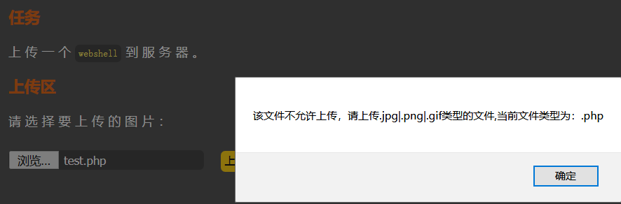

pass-1
上传一个PHP脚本，触发前端验证。

方法1：去掉事件触发。删除"return checkFile()"。
_files/Image [1].png)
重新发送即可上传成功。
放法2：修改文件名为test.jpg，先绕过验证，同时抓包，再修改filename为test.php，即可绕过。
_files/Image [2].png)
pass-2
源代码：
if(($_FILES['upload_file']['type'] == 'image/jpeg') || ($_FILES['upload_file']['type'] == 'image/png') || ($_FILES['upload_file']['type'] == 'image/gif')){......}
文件类型type验证，抓包修改content-type为"image/jpeg"（其它类型也可）。
_files/Image [3].png)
pass-3
这题比pass-2多了过滤规则和黑名单。
$deny_ext = array('.asp','.aspx','.php','.jsp');
$file_name = trim($_FILES['upload_file']['name']);
$file_name = deldot($file_name);//删除文件名末尾的点
$file_ext = strrchr($file_name, '.');
$file_ext = strtolower($file_ext); //转换为小写
$file_ext = str_ireplace('::$DATA', '', $file_ext);//去除字符串::$DATA
$file_ext = trim($file_ext); //收尾去空
听说.php3、.php4和.phtml等后缀名的文件上传后可以执行，我搭建的环境无法复现成功。但是httpd-conf配置文件有一个选项可以使Apache能够解析此类后缀名脚本。
_files/Image [4].png)
默认应该是可以解析.phtml脚本的，但是测试失败。只有打开这一项(去掉前面的"#")后，才测试成功。如果想解析.php3脚本，则需要在后面添加.php3。这种漏洞的形成原因应该是配置不当。
pass-4
与pass-3相比，黑名单几乎包括所有可能执行的脚本后缀名。
$deny_ext = array(".php",".php5",".php4",".php3",".php2","php1",".html",".htm",".phtml",".pHp",".pHp5",".pHp4",".pHp3",".pHp2","pHp1",".Html",".Htm",".pHtml",".jsp",".jspa",".jspx",".jsw",".jsv",".jspf",".jtml",".jSp",".jSpx",".jSpa",".jSw",".jSv",".jSpf",".jHtml",".asp",".aspx",".asa",".asax",".ascx",".ashx",".asmx",".cer",".aSp",".aSpx",".aSa",".aSax",".aScx",".aShx",".aSmx",".cEr",".sWf",".swf");
这时候可以利用.htaccess配置文件，在.htaccess文件添加内容：
<FilesMatch "2.jpg">
SetHandler application/x-httpd-php
</FilesMatch>
这些指令的作用是对"2.jpg"文件重新以PHP脚本解析。先上传.htaccess文件，再上传2.jpg，就成功拿到shell。
pass-5
这道题pass-4与相比，禁止上传".htaccess"，但是缺少了后缀名变小写的规则。因此可以把脚本文件后缀名改成大写形式，从而上传成功。
_files/Image [5].png)
pass-6
这道题的显示源码是有问题，显示代码码的页面和执行代码的页面有差别。
_files/Image [6].png)
_files/Image [7].png)
index.php前面还缺少一句去掉空白的代码。
这道题与pass-4相比，禁止上传".htaccess"文件，但是缺少了去掉左右空白字符的规则。因此可以把在脚本后缀名添加空白(%20)，一般文件名后面有空白会被文件系统自动去掉，所以需要使用burpsuite使用修改。
_files/Image [8].png)
pass-7
这道题与pass-4相比，禁止上传".htaccess"文件，但是缺少了去掉尾部" . "的规则。因此可以把在脚本后缀名添加" . "绕过。
_files/Image [9].png)
这题与pass-6的原因一致，都是利用系统对文件的命名规则，即末尾不允许有空格和小数点。因为在代码层中，空格和小数点仍保留，所以才能绕过代码层的检测。然而，在写入文件时，空格和小数点被系统去掉，导致生成了合法的脚本文件名。
pass-8
这道题与pass-4相比，禁止上传".htaccess"文件，但是缺少了去掉尾部" ::$DATA "的规则。因此可以把在脚本后缀名添加" ::$DATA "绕过。
_files/Image [10].png)
原因不详，网上说法是PHP在windows系统写入数据流时，如果文件名为"文件名+::$DATA"时，就会把$DATA之后的数据当作文件流处理，不会检测后缀名，且保持"::$DATA"之前的文件名。
pass-9
综合题，代码：
$deny_ext = array(".php",".php5",".php4",".php3",".php2",".html",".htm",".phtml",".pHp",".pHp5",".pHp4",".pHp3",".pHp2",".Html",".Htm",".pHtml",".jsp",".jspa",".jspx",".jsw",".jsv",".jspf",".jtml",".jSp",".jSpx",".jSpa",".jSw",".jSv",".jSpf",".jHtml",".asp",".aspx",".asa",".asax",".ascx",".ashx",".asmx",".cer",".aSp",".aSpx",".aSa",".aSax",".aScx",".aShx",".aSmx",".cEr",".sWf",".swf",".htaccess");
$file_name = trim($_FILES['upload_file']['name']);
$file_name = deldot($file_name);//删除文件名末尾的点
$file_ext = strrchr($file_name, '.');
$file_ext = strtolower($file_ext); //转换为小写
$file_ext = str_ireplace('::$DATA', '', $file_ext);//去除字符串::$DATA
$file_ext = trim($file_ext); //首尾去空
逻辑漏洞，后缀名添加" . "+" "+" . "即可绕过，首先删除最后一个小点，接着空格被截取，最后空格再被去掉，所以最后$file_ext=""。在写入文件时，同样由于系统会去掉末尾的空格和小点，使得后缀名多余的" . . "被去掉，生成合法脚本。
pass-10
代码：
$deny_ext = array("php","php5","php4","php3","php2","html","htm","phtml","jsp","jspa","jspx","jsw","jsv","jspf","jtml","asp","aspx","asa","asax","ascx","ashx","asmx","cer","swf","htaccess");
$file_name = trim($_FILES['upload_file']['name']);
$file_name = str_ireplace($deny_ext,"", $file_name);
如果文件名含有黑名单的字符串，就会被设为空。可以双写绕过。
_files/Image [11].png)